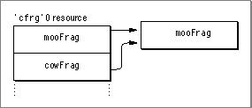

Legacy Document
Important: The information in this document is obsolete and should not be used for new development.
Important: The information in this document is obsolete and should not be used for new development.


Multiple Names for the Same Fragment
The CFM-based architecture allows you to assign multiple names to a single fragment. For example, if you have a fragment that implements multiple SOM classes, you can assign a separate name for each class, all of which point to the same fragment.You store multiple names as multiple
'cfrg'0entries. As mentioned earlier, the'cfrg'0resource is actually an array, so you can store as many fragment descriptions as you like.For example, the
'cfrg'0resource in Figure 3-1 contains two fragment entries,mooFragandcowFrag, which both point to the same fragment (that is, their'cfrg'0resource entries map to the same location). If the Code Fragment Manager is called to preparemooFragand then called sometime later to preparecowFrag, it knows that they are the same fragment and treats them as such. For example, if the preparation request forcowFragcame from the same process, it increments the reference count formooFragand creates a closure using the existing connection. In this manner it is possible to create "aliases" for fragment names.Figure 3-1 Two names for a single fragment

You can use aliasing to update older libraries without having to change the client fragments that import from them. For example, say you build a library
cowFragand create several applications that use it. Sometime later you build another librarymooFragthat contains all the functionality ofcowFragas well as some new features. If the'cfrg'0entry formooFragcontains an entry for bothmooFragandcowFrag, then the following are possible:
- Applications built with
mooFragcan run withmooFragand use all of the available features.- Applications built with
cowFragcan run withmooFragand use the features previously available incowFrag.
© Apple Computer, Inc.
11 MARCH 1997